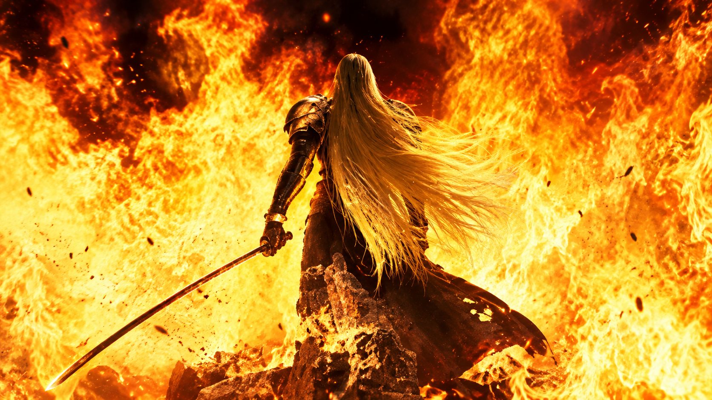

Final Fantasy 7
Por que é o melhor jogo?
Final Fantasy 7 é amplamente considerado um dos melhores jogos de todos os tempos, devido à sua narrativa envolvente, personagens bem desenvolvidos e trilha sonora icônica.
História e Temas Profundos
- Aborda temas maduros e pioneiros para a época, como ambientalismo, ecoterrorismo e os perigos do capitalismo desenfreado representado pela megacorporação Shinra.
Revolução Gráfica e Técnica
- Marcou a transição histórica da série para os gráficos em 3D com polígonos e revolucionários cenários pré-renderizados.
- Introduziu cenas cinematográficas (CGs) de cair o queixo na época do PlayStation 1, mudando o patamar de como histórias eram contadas nos videogames.
Trilha Sonora Icônica
- A música composta por Nobuo Uematsu é uma obra-prima atemporal.
- Temas como a introdução de Midgar e a música de chefe (One-Winged Angel) definiram a identidade sonora dos RPGs.
Sistema de Matéria inovador
- O sistema de Matérias permite equipar esferas mágicas nas armas e armaduras dos personagens
- Dá total liberdade para criar combinações únicas de magias, invocações e habilidades passivas, adaptando qualquer personagem para qualquer função no combate
Personagens Marcantes
- Cloud Strife. O protagonista que quebrou o esteriótipo do herói perfeito ao apresentar uma mente profundamente fragmentada, memórias falsas e uma crise de identidade que o jogador desvenda aos poucos.

- Aerith Gainsborough. Representa a conexão com o planeta e a esperança. Sua personalidade alegre contrasta com um destino trágico, protagonizando um dos momentos mais chocantes e emocionantes da história dos videogames.

- Tifa Lockhart. Uma lutadora poderosa que equilibra sua força física com uma personalidade acolhedora e empática, funcionando como a "âncora emocional" e a chave para ajudar Cloud a recuperar sua verdadeira sanidade.

- Barret Wallace. O líder explosivo e apaixonado do grupo ecoterrorista Avalanche, cujo visual imponente esconde um pai extremamente dedicado e um homem lutando pelo futuro de sua filha.

- Red XIII (Nanaki). Uma criatura leonina inteligente e de vida longa que traz uma perspectiva ancestral à história, lidando com o fardo de ser um dos últimos de sua espécie e com o orgulho de seu povo.

- Sephiroth(antagonista). O lendário soldado que enlouquece ao descobrir as origens de sua criação, tornando-se uma ameaça de proporções divinas. Sua imponência, a espada Masamune e sua obsessão por Cloud o consagraram como um dos maiores vilões da cultura pop.
